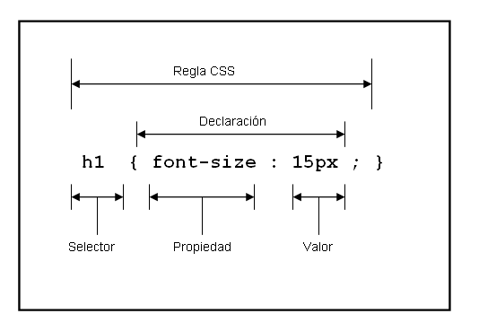
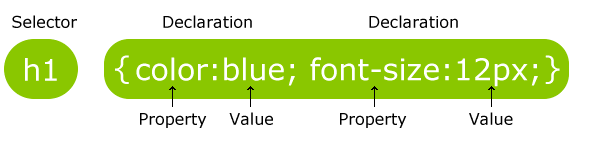
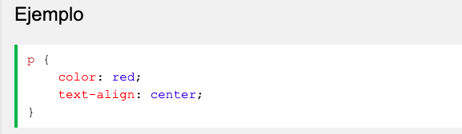

SINTAXIS Y SELECTORES CSS

Un conjunto de reglas CSS consta de un selector y un bloque de declaración:

EL punto selector para el elemento HTML que desea estilo.
El bloque de declaración contiene una o más declaraciones separadas por punto y coma.
Cada declaración incluye un nombre de propiedad CSS y un valor, separados por dos puntos.
Una declaración CSS siempre termina con un punto y coma, y los bloques de declaraciones están rodeados por llaves.
En el siguiente ejemplo todos los elementos serán alineados-centro, con un color rojo texto:

Durango, Alicia. Diseño Web con CSS: 2ª Edición. IT Campus Academy, 2015.
Diseños web con CSS 2a Edicion
INTERACCIÓN HUMANO ORDENADOR

La Interacción Humano-Computadora (HCI), es el estudio de la interacción entre el ser
humano, las computadoras y las tareas que se desarrollan; principalmente se enfoca a
conocer cómo la gente y las computadoras pueden interactuar para llevar a cabo tareas
por medio de sistemas y software.
La Interacción Humano-Computadora se convirtió oficialmente en una disciplina con el advenimiento de la computadora personal.
Con el primer Macintosh, IBM PC 5150 y Commodore 64 utilizados en la oficina, la gente empezó a darse cuenta de cómo esta transición
afectará no sólo a su trabajo sino a sus vidas en general. Los PCs fueron lanzados con muchas nuevas características como procesadores de texto,
facilidades de juego y ayudas de contabilidad. Con el tiempo, su nivel de sofisticación aumentó hasta el punto en que el objetivo era hacer que la interacción
hombre-computadora se asemejara a la interacción entre humanos, de la forma más natural y sin fisuras posible
Martínez de la Teja, G. M. (2007). Ergonomía e interfaces de interacción humano-computadora. In IX Congreso Internacional de la Ergonomía (p. 8).
Interaccion Humano ordenador